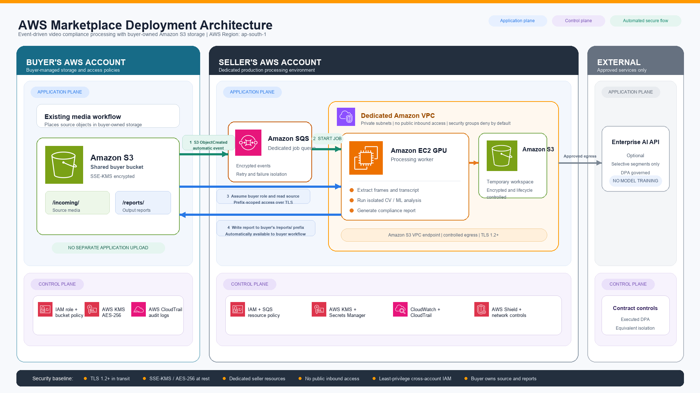

Your source stays under your control
Media can remain in buyer-owned Amazon S3 or other agreed isolated storage. Vidcomply receives only the minimum permissions required to process the asset and return results.
Buyer-owned source storage, dedicated processing, agreed data residency, auditable access, no model training, and contractual deletion form the baseline for Vidcomply enterprise deployments.
These commitments describe the standard enterprise deployment model. The precise architecture, region, services, access, and retention settings are agreed with each customer.
Media can remain in buyer-owned Amazon S3 or other agreed isolated storage. Vidcomply receives only the minimum permissions required to process the asset and return results.
Each customer receives dedicated processing resources and separate queues, protected through least-privilege IAM and network controls. Dedicated AWS account deployment is available where stricter isolation is required.
Deployment region is agreed before onboarding based on data-residency, security, and latency requirements—not automatically assigned as the “nearest” region.
Customer content is processed solely for the contracted service. It is not used to train, retrain, or improve Vidcomply models, and approved AI subprocessors are subject to equivalent no-training controls.
Processing activity, infrastructure actions, and access are logged. Customers can receive outputs, processing records, and relevant audit logs under the agreed access model.
Processing files are temporary and lifecycle-controlled. Retention periods, return, and deletion procedures are contractually agreed, with deletion available on request and at contract termination.
The AWS Marketplace deployment pattern can read from buyer-controlled Amazon S3, process inside an isolated seller environment, and write results back to the customer workflow.

Buyer-owned source storage · Dedicated processing · Agreed data residency · Auditable access · No model training · Contractual deletion
Source media remains in an agreed customer-controlled location.
An event starts a job through encrypted, policy-scoped access.
Processing runs inside a dedicated Amazon VPC boundary.
Reports are written back to the customer's approved destination.
Customers retain control of source storage and receive their outputs. Processing records and relevant audit logs can be provided, with read-only infrastructure visibility or dedicated-account deployment available where required and agreed.
Vidcomply AI is listed as a seller-operated SaaS product on AWS Marketplace and is marked “Deployed on AWS.” Customers can procure the platform through their established AWS purchasing workflow.
Open the official AWS Marketplace listingThe June 2026 review covered Operational Excellence, Security, Reliability, and Performance Efficiency. Medium-risk improvement opportunities were recorded and tracked. Cost Optimization and Sustainability were not assessed.
This architecture review is not an AWS certification. The complete 75-page report is available to qualified customer security teams under appropriate confidentiality terms.Customer-specific architecture, contractual schedules, questionnaires, and the complete AWS review are supplied separately during technical due diligence.
Customer-neutral architecture, security controls, content governance, and AWS assurance.
Download PDFA non-binding customer-neutral template with deployment details assigned to the Order Form or Security Schedule.
Download PDFService categories, purposes, deployment choices, and customer-specific transfer controls.
View overviewHow Vidcomply collects, uses, shares, protects, retains, and deletes personal information.
View policyThe full AWS Well-Architected Tool report is shared with qualified security teams during due diligence.
Request accessPublic commitments covering processing boundaries, security measures, subprocessors, and incident notification.
View statementQualified customer security teams can request the full AWS review, detailed network diagrams, customer-specific architecture, security questionnaires, and contractual security schedules.